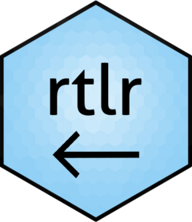

library(ggplot2)
# install.packages("rtlr")
library(rtlr)
theme_update(text = element_text(size = 20))
p <- ggplot(mtcars, aes(factor(cyl))) +
geom_bar()
p
(This blog post was chosen as a highlight for R Weekly issue 2023-W15)
Do you know anyone who speaks Arabic, Persian or Hebrew? Do you know any R professional who speaks any of these languages? Maybe you are yourself an R professional who speaks any of these languages and uses them in your R work?
TL;DR - You can use rtlr to fix right-to-left problems in R. install the package with install.packages("rtlr") and use str_rtl() with your text as argument(s).
What is the Problem with Right-to-Left Languages?
As coders and R professionals, the main tool in our toolbox is code. We write R code to solve problems, and this is what sets us apart from other professionals, such as analysts using some type of a GUI program. Nevertheless, code has a very clear postulate - it is written in English, and therefore it is written left-to-right (from now on: LTR, or RTL for “right-to-left”). For the most of us, this is an obvious choice, as English is the lingua franca of the programming world. But for a lot of us, there is a need to use data and communicate results in other languages. This problem becomes much more troublesome when using an RTL language.
More than 2.3 billion people around the world are speaking a language that is written right-to-left.1 Such languages include, for example, Arabic, Persian, Hebrew, and Fulani. I am myself a native Hebrew speaker, and this is what brought me to write this package. Code is not meant to be written right-to-left, and some problems arise when doing so. Let’s look at an example.
This is a very basic plot of the mtcars dataset, showing the number of cars with each number of pistons. Now, let’s think about the scenario where we communicate our analysis results to a non-English-speaking audience. Let’s say our audience’s native language is Arabic. Then, we should change the x-axis label:
p +
labs(
x = "اسطوانات"
# `x` in `labs()` says "cylinders" in Arabic.
)This is fine, but let’s say we need to add more information to the x-axis label, such as the current year.
p +
labs(
x = "اسطوانات (2023)"
# `x` in `labs()` says "cylinders (2023)" in Arabic.
)The code script correctly presents (2023) to the left of the word “اسطوانات” (meaning “pistons”), but our plot malfunctions: it shows (2023) to the right of “اسطوانات”. This is a common problem in RTL languages, as R interpretes all code as written LTR. This problem is also present when ending a sentence with a punctuation mark, such as . or ,.
rtlr - Solves Your RTL Problems
This is where rtlr steps in. Its main (and currently only) function, str_rtl(), wraps strings with the Unicode character \u202B, which tells R to handle everything in that string that comes after this character as RTL.2 It does so as a wrapper around stringr::str_c().
p +
labs(
x = str_rtl("اسطوانات (2023)")
# `x` in `labs()` says "cylinders (2023)" in Arabic.
)
This solved our problem! The year parentheses are located correctly on the left side. A solution to this problem without using rtlr would look something like:
x = paste0("\u202B", "اسطوانات (2023)")This solution has two drawbacks: having to remember the exact Unicode character adds to your cognitive load, and when having to print multiple lines with \n you have to paste \u202B again.3 Let’s look at a common use case, where we want to add an informative caption to the plot, this time in Hebrew, but we have too much text for a single line:
p +
labs(
x = str_rtl("اسطوانات (2023)"),
# `x` in `labs()` says "cylinders (2023)" in Arabic.
caption = "מקור המידע: טבלה מובנית של נתוני מכוניות. עיבוד: מתן חכים. יש להקפיד על הצגת טקסט מימין לשמאל."
# `caption` in `labs()` says in Hebrew:
# "Source of data: a built-in data frame of car data. Analysis: Matan Hakim."
# "You should insist on showing your text right-to-left."
)We have two problems here:
The caption gets cut off in the middle;
The dot in the end of the sentence is placed wrongly on the right side, while it should be on the left.
This can be easily solved after inserting each line as a separate string argument, and using the multiline = TRUE argument:
p +
labs(
x = str_rtl("اسطوانات (2023)"),
# `x` in `labs()` says "cylinders (2023)" in Arabic.
caption = str_rtl(
"מקור המידע: טבלה מובנית של נתוני מכוניות. עיבוד: מתן חכים.",
"יש להקפיד על הצגת טקסט מימין לשמאל.",
multiline = TRUE
)
# `caption` says in Hebrew:
# "Source of data: a built-in data frame of car data. Analysis: Matan Hakim."
# "You should insist on showing your text right-to-left."
)Notice how the lines are split with no overflow, and how the final dot is placed on the left side, where it should be.
Further use cases might include printing to the console, where str_rtl() also comes in handy:
x <- "הנקודה צריכה להיות בסוף המשפט."
# `x` says in Hebrew:
# "the dot should come at the end of the sentance."
cat(x)הנקודה צריכה להיות בסוף המשפט.cat(str_rtl(x))הנקודה צריכה להיות בסוף המשפט.Again, notice how the dot ends up in the left side, where it should be. Additionally, since this blog post is ultimately rendered to HTML, the first time cat(x) is printed, it is all mixed-up backwards (meaning “tnirp” instead of “print”, but in Hebrew). This problem doesn’t exist when printing to the console, but it does when writing web-published code.
You can learn more on rtlr with printing ?str_rtl, visiting its pkgdown website, or browsing its Github repository.
Conclusion
This blog post has introduced the rtlr package for the R programming language which helps plotting and printing RTL languages correctly. It uses its main function, str_rtl(), to achieve this. rtlr has seen its initial release and its version is v0.1.0 - I welcome suggestions for further use cases or implementations. Feel free to open an issue on Github or email me.
I would like to thank Hadley Wickham and Jennifer Bryan for authoring R Packages (2e). Reading this book has been instrumental in the development of rtlr. Thanks to Hitsu Yonai and Micha Silver for providing helpful feedback for this blog post. Finally, Thanks to Adi Sarid, whose Stack Overflow question from 2018 motivated this package, and helpful comments gave me confidence in this project and his suggestions would be implemented in future versions of rtlr.
Footnotes
For further reading on this, see: https://unicode.org/reports/tr9/#Directional_Formatting_Characters↩︎
This is because
\nstops the RTL-embedding provided by\u202B, and forces you to write this as\n\u202Binstead.↩︎